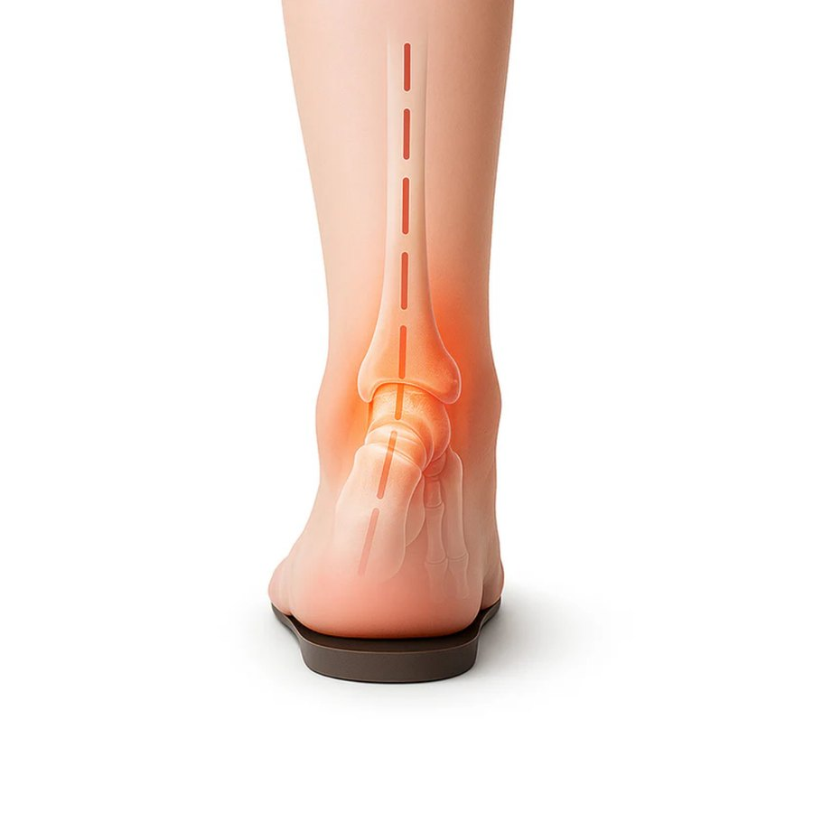
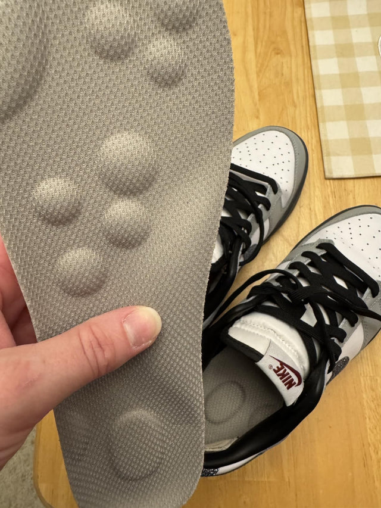
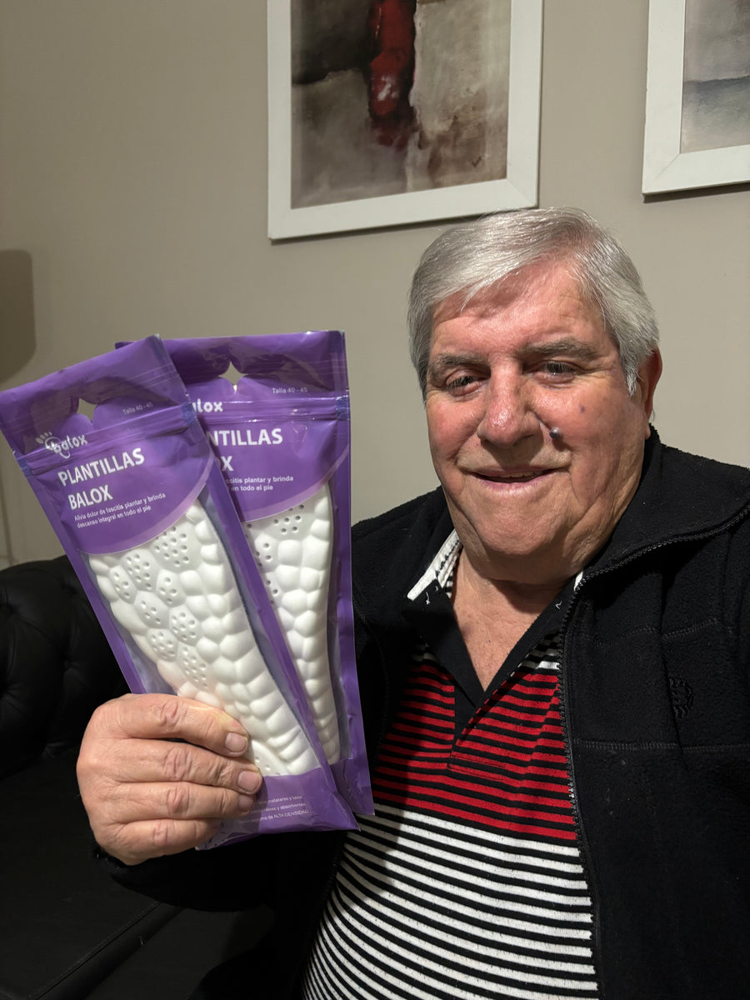
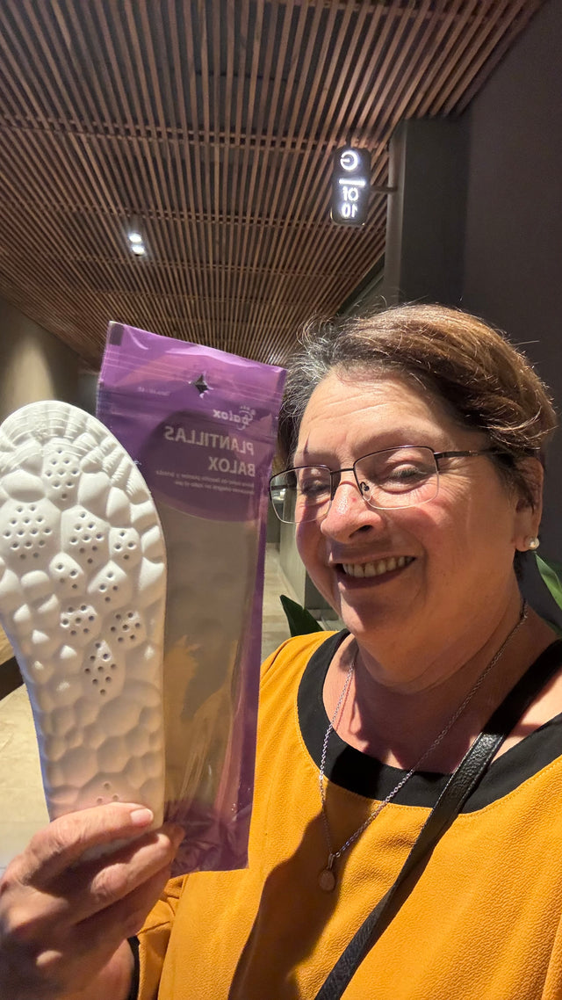

Historias · Cuidar a los que nos cuidaron
Mi mamá dejó de ir caminando al super “porque ya está grande”. Era otra cosa, y costó $30.000 arreglarla.
No es una nota médica. Es lo que me pasó con mi vieja de 72 años, lo que probamos, lo que no funcionó y lo que sí. La escribo porque hubiera querido leerla antes.
Pasa de a poco y por eso no lo ves. Primero mi mamá dejó de ir caminando al supermercado, que está a seis cuadras. Después empezó a decir que “se cansaba” en los cumpleaños y buscaba dónde sentarse apenas llegaba. Un domingo la vi bajar el cordón de la vereda con pasitos cortos, mirando el piso, agarrada de mi brazo. Le pregunté qué le pasaba y me contestó lo que contestan todas: “son los años, hija”.
Yo le creí. Durante casi un año le creí.
El día que me di cuenta de que no eran los años
Fue por una tontería. Estábamos en su casa, ella descalza, y la vi apoyar el talón en el piso de cerámica y hacer una mueca. Chiquita, pero la hizo. Le pregunté si le dolían los pies. “Un poco, a la noche”. Le pregunté desde cuándo. “Y… hace rato”.
Nadie le había preguntado. Ni yo, ni mis hermanos, ni el médico clínico, que le mira la presión y el colesterol. Le dolían los pies hacía más de un año y lo había archivado como parte de envejecer.

Lo que aprendí después (y que nadie me había explicado)
Me puse a leer. Debajo del talón tenemos un colchón de grasa que amortigua cada paso. Con los años se adelgaza y se endurece. A los 70 puede tener la mitad del espesor que a los 30: el hueso queda más expuesto y el piso duro se siente directo. Al mismo tiempo el arco se vence, el tobillo gira hacia adentro y el cuerpo compensa con rodillas y cadera. Por eso a mi mamá después de caminar le dolían los pies, pero también las rodillas y la cintura.
Y lo peor: el dolor en los pies es uno de los predictores más fuertes de caídas en adultos mayores. Porque cambia la forma de pisar y porque la persona camina menos, pierde fuerza, pierde equilibrio y le agarra miedo. Mi mamá no estaba “más grande”. Estaba entrando en ese círculo.

“No estaba más grande. Le dolían los pies hacía un año y nadie le había preguntado.”
Carolina
Lo que probamos primero (y por qué no funcionó)
Lo primero que hice fue lo que hace todo el mundo: llevarla a comprar zapatos “cómodos”. $180.000 en unos zapatos anatómicos horribles que usó dos veces. “Quiero mis zapatos de siempre”, me dijo, y tenía razón: a los 72 años nadie quiere que le cambien el calzado.
Después pregunté por plantillas a medida: $250.000 el par, sirven para un solo zapato, y había que volver a hacerlas cuando el pie cambiara. Compré unas de gel en la farmacia a $15.000: a las tres semanas estaban aplastadas como una hoja de papel.

Lo que terminó funcionando
Una amiga enfermera me habló de unas plantillas que usaban en el hospital para las guardias, las Cloud-Comfy 5D, de una marca argentina. Lo que me convenció no fue la publicidad sino tres cosas prácticas: entran en los zapatos que mi mamá ya usa (así que no había que convencerla de nada), tienen una copa de talón que hace el trabajo de la almohadilla que se le adelgazó, y la base es firme, no blanda; eso para el equilibrio importa, porque un pie que se hunde en espuma es un pie menos estable.
Y tenían garantía de 60 días y cambio de talle gratis. O sea: podía probar sin que ella tuviera que “ponerse” a probar nada.

Cómo fue, semana a semana
- Día 1Se las puse en las zapatillas de andar por casa, sin anunciar mucho
Dos horas, como dice el fabricante. A la noche le pregunté cómo había andado. “Raro, pero no me dolió el talón”.
- Semana 1Me las pidió para los zapatos de salir
Esa fue la señal. Compré el pack de tres: uno para cada calzado que usa. Y uno para mí, que también trabajo parada.
- Semana 3Volvió a ir caminando al super
Seis cuadras de ida, seis de vuelta. No lo festejó ni lo comentó. Simplemente un día fue. Yo sí lo festejé.
- Mes 2La vi bajar el cordón sin mirar el piso
Pasos normales, sin agarrarse. No es que esté “curada” de nada: tiene 72 años. Pero camina como hace tres años.
★★★★★ 4,79/5 · +190 reseñas verificadas · El regalo que las familias vuelven a comprar
Lo que leí en las reseñas y me dio tranquilidad
Antes de comprar leí las reseñas de la tienda y hay un patrón: un familiar compra varios pares para toda la familia. “Compré 5 para toda la familia y volví a comprar la misma cantidad”. “Las usa mi marido y mi hija”. “A las personas que les regalé quedaron muy satisfechas”. Perla, una compradora: “se me fue el dolor de talón y rodillas, he vuelto a caminar y hacer todo lo que me gusta”. Sergio, de 52, las usa hasta para jugar al fútbol.
Y una cosa que me pareció importante: la marca pide empezar de a poco, y si la persona tiene diabetes o neuropatía, consultar antes con su médico. Mi mamá no tiene, pero lo aclaro porque es lo responsable.

Lo que compré
Plantillas Cloud-Comfy 5D
Las vende Balox, una empresa argentina especializada en productos para el pie, con tienda oficial en Mercado Libre y más de 100.000 pares vendidos. Lo que a mí me importó: garantía de 60 días y cambio de talle gratis.

- Base de doble densidadFirme abajo, suave arriba: no se aplasta en semanas como el gel.
- Soporte de arcoMantiene el pie en posición neutra y descarga la fascia.
- Copa de talónConcentra el tejido graso bajo el hueso, donde más duele.
- Relieves de masaje 5DSe hunden y vuelven con cada paso: reparten el apoyo.
- Memoria térmicaSe adapta a tu pie con el calor; vuelve a su forma al sacarla.
- Recortable · 35 a 46Entra en zapatillas, zapatos de trabajo y botas.
Lo que probamos, una al lado de la otra
En lo que importa para alguien de 65 a 85 años:
| Cloud-Comfy 5D | Zapato “anatómico” | A medida (podólogo) | |
|---|---|---|---|
| Entra en el calzado que ya usa | ✓ | ✗ | ~ |
| Copa de talón que reemplaza la almohadilla | ✓ | ~ | ✓ |
| Base firme (estabilidad, no se hunde) | ✓ | ~ | ✓ |
| Sirve para varios calzados | ✓ | ✗ | ✗ |
| Se puede probar y devolver | ✓ | ✗ | ✗ |
| Precio | $29.990 por par (menos en pack) | $150.000–$250.000 | $250.000 o más |
Precios de referencia en Argentina (noviembre 2026). Si tiene una patología diagnosticada, seguí la indicación de su profesional.
Lo que cuentan otros que compraron para la familia
Reseñas de compradores, tal cual las escribieron en la tienda oficial de la marca.


“Desde el primer día noté el cambio, son mágicas. Se me fue el dolor de talón y rodillas. He vuelto a caminar y hacer todo lo que me gusta.”
“Hola, las plantillas son excelentes, tengo 52 años, y las estoy usando diariamente y también para jugar al fútbol en mis botines… un éxito.”
“Son muy cómodas, super recomendables. Compré 5 para toda la familia y volví a comprar la misma cantidad.”
“Muy buenas y cómodas. A las personas que les regalé quedaron muy satisfechas.”
“Compré por segunda vez para tener más pares disponibles. También las usa mi marido y mi hija. Son excelentes, cómo alivian mi dolor de pies.”
Dónde las compré (y hoy están con descuento por cantidad)
En la web del fabricante. Al momento de publicar esta nota, el par está con 60% de descuento sobre el precio de lista, y comprando 3 o 5 pares (para ella, para él y para vos) el precio por par baja todavía más. Es la misma oferta que ve cualquiera que entra al sitio.

Plantillas Cloud-Comfy 5D
Talles 35 a 46 · Gris o negro · Recortables
$75.900$29.990por par · 3 pares a $21.990 c/u · 5 pares a $14.990 c/u
- Envío gratis comprando 4 pares o más (a todo el país)
- 3 cuotas sin interés
- Descuento extra pagando por transferencia bancaria
- Cambio de talle gratis durante 60 días, sin preguntas
- Garantía de 60 días: si no te funcionan, te devuelven el dinero
- De regalo: e-book de ejercicios para el dolor plantar, escrito por un podólogo de la UBA
🔥 Quedan — pares en el depósito del fabricante (reponen cada semana)
La oferta de hoy termina en --:--:--
Al entrar, elegí la cantidad de pares (el descuento se aplica solo), después el talle y el color de cada par. El descuento extra se aplica eligiendo transferencia al pagar.
Lo que me preguntaron mis hermanos
¿Cómo sé el talle sin preguntarle?+
Mirá el número en la suela o en la lengüeta de sus zapatillas de uso diario. Vienen en rangos (35-36, 37-38, …, 45-46) y son recortables, así que si dudás pedí el rango más grande. Si le erraste, el cambio es gratis dentro de los 60 días.
¿Y si no quiere usarlas?+
Es la objeción más común. Por eso se las puse en el calzado de casa, sin anunciar. La mayoría nota la diferencia el primer día (el talón deja de doler a la noche) y después las pide para los otros zapatos. Si no, la garantía cubre la devolución.
¿Sirven si tiene diabetes o neuropatía?+
Muchas personas con neuropatía las usan (una compradora: “sufro de neuropatía y necesito un calzado que me reciba bien el pie; las recomiendo”). Pero el pie de una persona con diabetes necesita control profesional ante cualquier cambio de calzado: consultá con su médico antes y revisá la piel los primeros días.
¿Cuánto duran y cómo se lavan?+
El fabricante indica 12 a 18 meses de uso diario sin degradarse. Se lavan a mano con agua tibia y jabón neutro, y se dejan secar a la sombra.
¿Cuánto tarda en llegar?+
Sale del depósito del fabricante en 24 a 48 horas hábiles. En CABA y GBA suele llegar entre 24 y 72 horas; al interior, de 3 a 6 días hábiles. Comprando 4 pares o más, el envío es gratis a todo el país.
Garantía de 60 días · Cambio de talle gratis · 3 cuotas sin interés